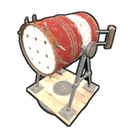
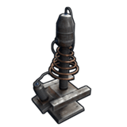

| アイコン |
名前 |
詳細 |
|
ワイヤーツール |
電気の配線を行うのに欠かせないツール。最大100ftまでストックできる |
|
ホースツール |
水を流す配管をつなぐのに必要。最大100ftまでストックできる |
 |
テスト発電機 |
すべての電源を供給する源。最大で1つの電力を供給する。 ※現状、ゲーム内にはあるが実装はされていない |
|
小型発電機 |
低湿燃料を消費して40電力を出力する発電機。これ1つで最大3つのオートタレットを稼働させることが可能 |
|
大きなソーラーパネル |
太陽が当たっているときのみ電力が供給される。「各充電式バッテリー」に接続すればそこへ電力をためることが可能 |
|
風力発電機 |
昼夜問わずに電力を発電する装置。高ければ高い程より多くの電力を生成する |
|
小型充電式バッテリー |
発電する機能はないが電力をためて他へ供給することが可能。主にソーラーパネルとの接続がメイン |
|
中型充電式バッテリー |
容量は小さくもなく大きくもないほどの電力を貯められる装置 |
|
大型充電式バッテリー |
上記の「小さい充電式バッテリー」よりも多くの電力をためることができる装置 |
|
コンピューターステーション |
監視カメラに登録されたIDを入力するとその監視カメラの映像を見ることが可能。詳細は→リモートコントロール |
|
スイッチ |
オンで電力を通過し、オフで電力を遮断する |
|
ボタン |
押すと一定時間、回路が通電して自動的に切れる |
|
AND回路 |
2か所から電力を供給し、2つの入力が通電時に出力に電力が流れる回路 |
|
OR回路 |
2か所から電力を供給し、 どちらか片方に電力が通電しているときに、出力に電力が流れる回路 |
|
XOR回路 |
2か所から電力を供給し、 2か所の入力が異なっている(片方が通電、片方が遮断)ときにだけ出力に電力が流れる回路 |
|
タイマー |
オンにした時、 指定した時間の間だけ出力に電力が流れる回路。出力に電力が流れる時間を変更できる |
|
分配機 |
電力出力を3つに分割できる装置。 |
|
ブロッカー |
2か所の入力があり、Block Passthrough(ブロックパススルー)に通電時、出力の通電を遮断する装置 |
|
カウンター |
電力がカウンターを通過した回数を表示する装置。また設定で入力時の電力量(パススルー用)を確認することが可能 |
|
分岐器 |
指定された電力量を「Branch Out」で出力する装置 |
|
メモリーセル |
1ビットの情報を記憶する回路。初期通電時は[0]の為Inverted Outputが出力されるが、
SET通電時に[1]を入力し、OutPutが出力されます。またその後に、SETを遮断したりPower Inを一旦遮断して再通電しても入力された[1]を記憶してるためOutPutが通電され続けます。SETが通電されておらずResetに通電があると[1]が[0]に戻りInverted Outputが出力されます。
Toggleに通電されると今設定されているビットとは反対の出力に切り替わるようになっています。これはオンオフの繰り返しでも反映されます |
|
混合器 |
ソーラーパネル等の低い電力を1つにまとめて出力する装置。ただし入力はバッテリーもしくは発電機系のアイテムしか接続できない |
 |
モジュラー車両押上機 |
車両を持ち上げてカスタマイズが出来るようになるアイテム |
|
ポケベル |
指定した周波数を受信すると音を鳴らす |
|
無線受信機 |
無線周波数を受信できる。RF Transmitterとセットで使う |
|
無線送信機 |
RF Transmitterの設置型アイテム。電気が流れると設定した周波数で無線信号を発信する |
|
スマートスイッチ |
公式アプリ「RUST+」とペアリングすると、アプリから
スイッチのONOFFの切り替えが可能になる。詳細はこちら→コンパニオンアプリ |
|
スマートアラーム |
公式アプリ「RUST+」とペアリングすると、通電時にアプリがある携帯に通知が飛ぶようになってる。詳細はこちら→コンパニオンアプリ |
|
|
公式アプリ「RUST+」とペアリングすると、アプリから工具棚、木箱の在庫状況を見ることができる。詳細はこちら→コンパニオンアプリ |
|
エレベーター |
最大6階まで設置できるエレベーターで1階につき1個必要となる。 |
Call Elevator]でエレベーターを呼び、「1階上昇」「最上階まで上昇」と「1階下降」「最下階まで下降」のボタンを押せる |
|
レーザーセンサー |
パワーオンすると、壁から赤い線が放射され、赤い線が何かを検出すると電力が流れる仕組み |
|
感圧版 |
プレイヤーがその上に乗れば電源が流れる。別途の「ドアコントローラー」を使えば自動ドアにもなる |
|
ドアコントローラー |
ドアの開閉に必要な装置。電源が流れているときにドアが開く |
|
HBHFセンサー |
置いてある目の前の半径20メートル内の人数をパススルーで送信できる。カウンターにつなぐだけで近くの人数を表示することができる。 |
|
点火器 |
点火器を起動すると近くの火を使うオブジェクトを点火させることが可能 |
|
RAND スイッチ |
乱数に基づくパススルーを許可する。ゲーム、トラップなどに使える（ネタアイテム) |
|
アラーム |
電気が流れるとアラームが鳴る |
|
簡素なライト |
電源が流れているときに発行するライト。シーリングライトのLED壁掛け版 |
|  |
サーチライト |
EキーでUSEと選択すれば、視点が動くのと一緒にサーチライトも一緒に動くので銃を構えながらでもできる |
|
シーリングライト |
上から吊るし、下をぼんやりと照らしてくれる、飛び道具が当たるとゆらゆらと揺れる |
|
ストロボライト |
チカチカと青色に点滅するライト |
|
回転灯 |
円を1週する赤いライト。パトランプみたいなやつ |
|
電気ヒーター |
壁に設置することができ、電源を入れると暖かい風が流れて濡れた体、凍えた体を温めてくれる |
|
ノックダウン標的 |
エイム力を鍛えるのにもってこいのアイテム。ちゃんと体力100と同じ状態 |
 |
デラックスクリスマスライト |
クリスマス用のライト。七色に点灯する |
|
大きなネオン看板 |
点灯すると書いた文字が光る看板 |
|
大きなアニメーションネオン看板 |
最大5つレイヤーまで書くことができ、点灯すると順番に点灯する看板 |
 |
中ぐらいのネオン看板 |
点灯すると書いた文字が光る看板 |
 |
中ぐらいのアニメーションネオン看板 |
最大5つレイヤーまで書くことができ、点灯すると順番に点灯する看板 |
|
小さなネオン看板 |
点灯すると書いた文字が光る看板 |
|  |
テスラコイル |
送る電力量によってダメージが変わるトラップ向けのアイテム。
範囲は土台約1.5枚分。また稼働中、このアイテムの耐久が減る(約2HP)。電力量によって与えられる 最大ダメージ量は35HP |
|
オートタレット |
2020年2月7日に大幅変更 銃火器と弾を中に入れ、リストに登録されていない敵を射撃する装置。
電気の入力は[Has Target]:敵を認識時に出力, [Low Ammo ]
タレット内が50発以下の時に出力, [No Ammo]タレット内の弾薬がなくなった時に出力。電力がない場合は稼働しない。
また武装したプレイヤーを攻撃する平和維持モードというものが存在する。認識範囲は正面から180度で敵補足時は360度回転をする。
詳細はこちら→オートタレット2.0 |
|
ケーブルトンネル |
壁に電気配線を通すために必要なアイテム。 ※現在はこれなしで配線ができるため完全にお役御免 |
|
液体スイッチ&ポンプ |
水の流れを止めることができるスイッチ |
|
液体分配管 |
電気の分配器の水配管版。1つの入力で3つの出力に分けれる |
|
スプリンクラー |
水を散布するアイテム。散布範囲は4マスの天井の中心に設置して土台4マス分 |
|
ウォーターポンプ |
水源に設置して水をくみ上げる装置。ある程度の深さがないと設置できない。20秒に30mlの水をくみ上げる |
|
電気浄水器 |
塩水を真水に浄化してくれる装置。1分間に150mlの塩水を浄水する |
|
流体混合管 |
3つの流体入力を1つの出力にまとめることができる管 |